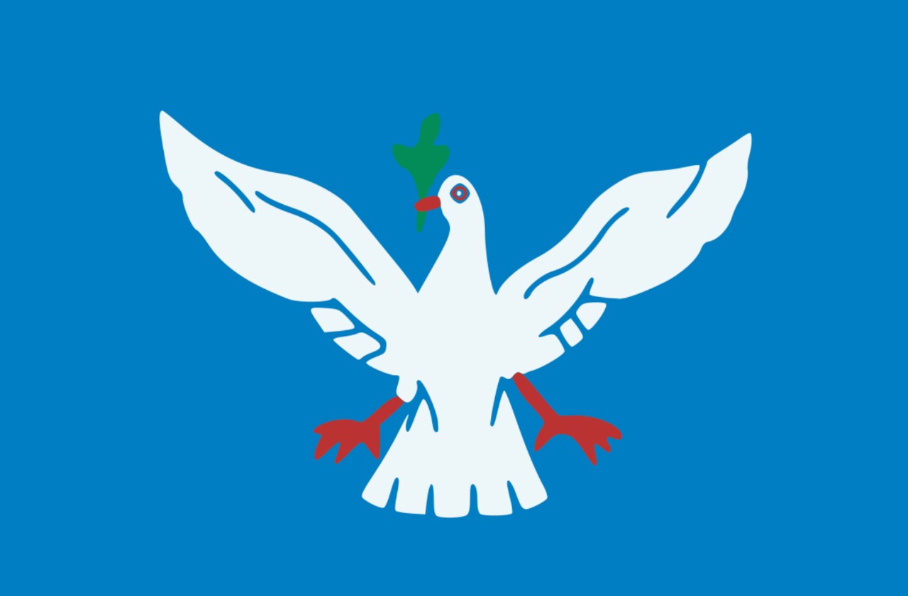

Estados e algumas capitais do
Brasil
Rio Branco

Rio Branco é a capital do estado do Acre (AC).
Área territorial:8.835km²
População: 350mil habitantes.
Curiosidade: de “Capital da Natureza”, em razão dos seus atributos naturais.
Maceió

Maceió é a capital do estado de Alagoas.
Área territorial: 509,6km²
População: 1.012.387 de habitantes
Curiosidade:Muito procurada pelos turistas nos meses de verão centro financeiro, social e cultural de Alagoas.
Macapá

Macapá é a capital do estado do Amapá
Área territorial: 6.407km²
População: 493.634 habitantes
Curiosidade: a única que não faz ligação com outras capitais por meio de rodovias.
Manaus

Manaus é a capital do estado do Amazonas
Área territorial:11.401km²
População: 2 milhões de habitantes.
Curiosidade: situada no centro da floresta amazônica.
Salvador

Manaus é a capital do estado do Amazonas
Área territorial:11.401km²
População: 2 milhões de habitantes.
Curiosidade: situada no centro da floresta amazônica.